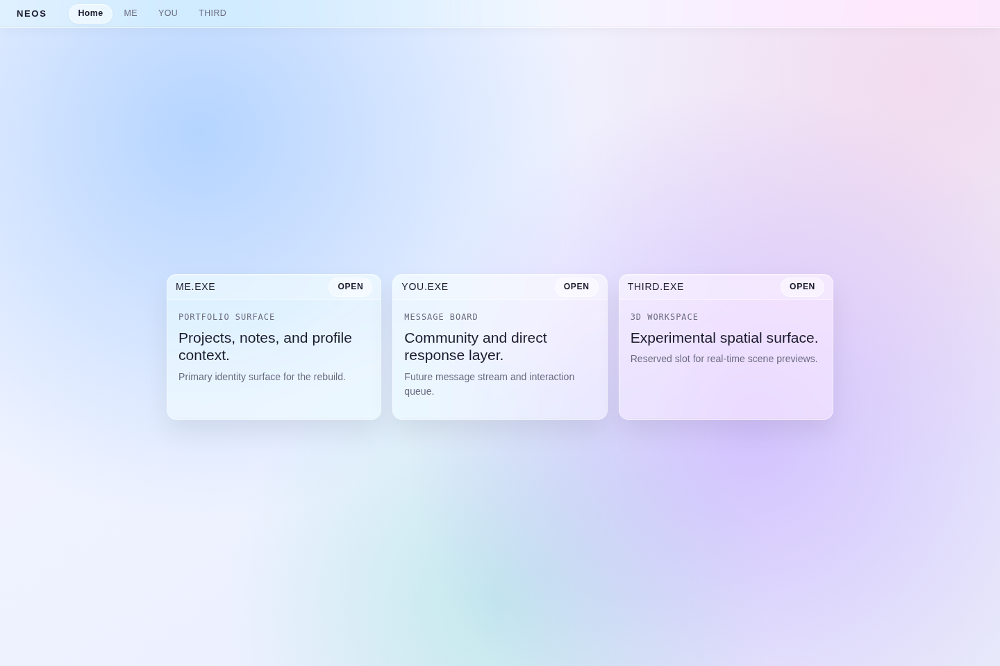
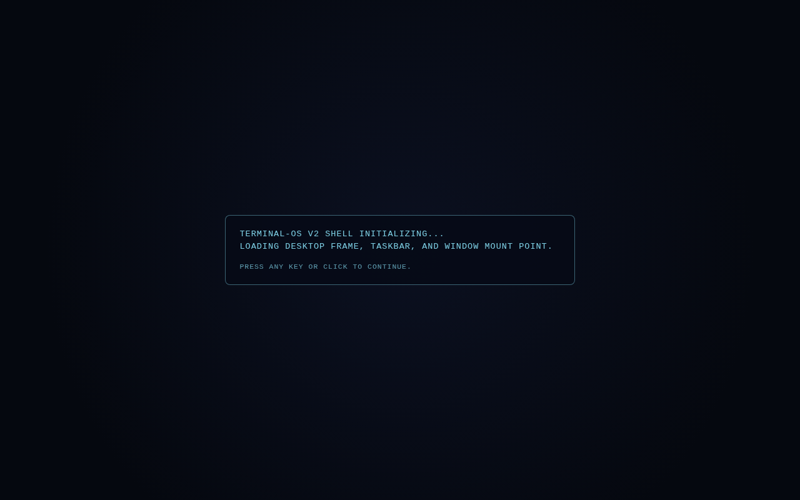
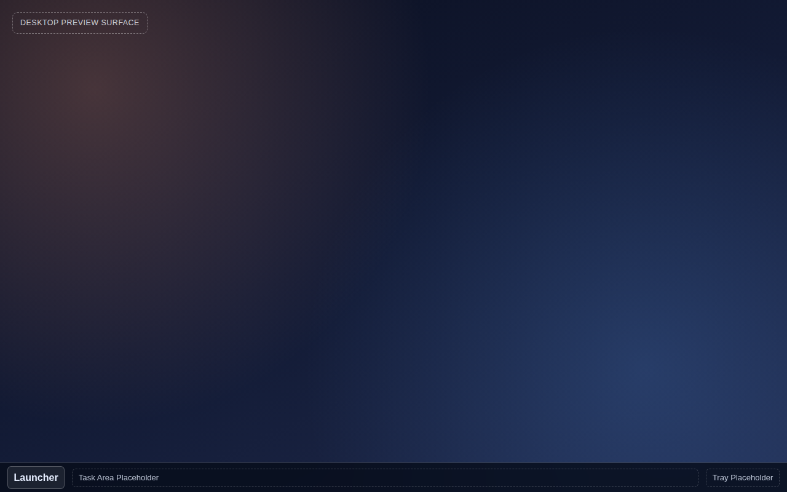
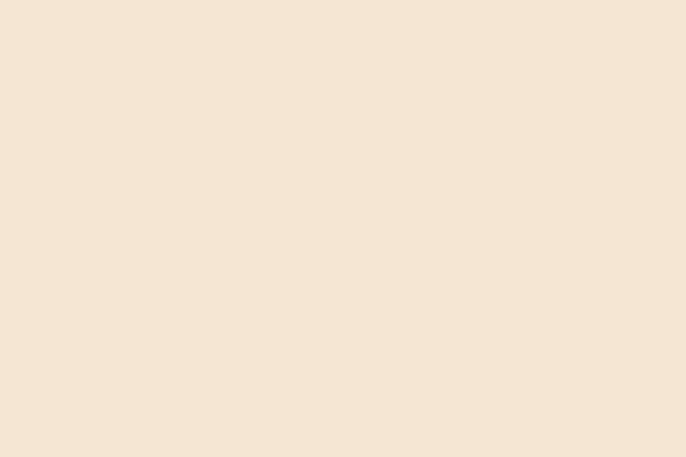

This PDF is the public-facing process log for the NEOS rebuild. It is
written to be readable by both technical and non-technical reviewers.
Each milestone explains what changed, why it changed, and what the UI
looked like at that step.
On 2026-03-16 the surface layer was hard reset to a blank canvas.
Multiple AI agents iterating on the liquid glass surface in parallel
created churn without convergence. The decision was made to rebuild
incrementally with coordinated planning via agentchattr.
Active lane: SITE-SHELL — rebuilding from blank canvas.
Glass module preserved in src/site/glass/ for re-integration.
Phase 2 (deferred): ME-DESKTOP — OS desktop wired into ME.EXE.
CONNECT-IMPLEMENTATION continues separately as M1 work.
The SHELL-01A/01B OS desktop code is preserved for ME-DESKTOP.
SITE-SHELL-02: Hard reset — surface stripped to blank canvas, coordinated rebuild via agentchattr (current)
ME-DESKTOP: OS desktop wired into ME.EXE (Phase 2)
Other channels: YOU.EXE, THIRD.EXE (Phase 3)
Stage 1A — Original
First Shell UI Pass
This milestone strengthened the HOME landing composition while
preserving the scoped ME.EXE OS boundary.
HOME presented a hero-led channel surface layout, and channel
switching moved to a secondary quick-switch overlay. ME.EXE owned
taskbar and launcher locally.
In plain English: landing felt deliberate and substantial without
collapsing into a tile-browser or smart-TV style menu.

Stage 1A: HOME channel navigation surface with hero composition and
secondary channel switcher. ME.EXE owned the taskbar in its own channel.
This kept channel switching available but secondary, while preserving
ME.EXE as the contained OS environment.
SHELL-01A — v2 Rewrite
Desktop Shell Frame + Boot Gate + Static Taskbar
After the v2 workflow reset, the project moved to a contract-first
desktop OS rewrite. SHELL-01A is the first milestone of the new
architecture: a proper desktop shell frame with correct layer ordering,
a boot gate, and a static taskbar.
This is a deliberate reset — not a visual upgrade of Stage 1A, but a
structural rewrite with a new architecture. The channel navigation from
Stage 1A is preserved in the timeline as history.
What this established
A stable desktop root in Desktop.tsx with spec-correct layer order.
A contract-shaped desktop store implementing the full DesktopStore interface.
A dedicated WindowLayer mount surface with no runtime logic.
A non-blocking boot gate that does not wait on VFS readiness.
Z_LAYER and SHELL_Z_INDEX constants locked in code.

Boot sequence: a fullscreen terminal-style overlay that dismisses on
click or keypress. Fires immediately on load without blocking VFS or
app services.

Desktop shell after boot is dismissed: gradient wallpaper, a
"Desktop Preview Surface" label marking the future icon layer, and a
static taskbar with Launcher, Task Area, and Tray placeholder zones.
This stack defines the layer order in code: wallpaper at the base,
preview surface, window mount point, taskbar above, and boot overlay
on top. Every z-index is driven by named constants, not magic numbers.
SITE-SHELL-01
Liquid Glass Channel Surface Root
This milestone rewired the app root from OS desktop boot to a light,
transparent channel surface.
`src/main.tsx` now mounts `SiteShell` from `src/site/`. The site root
shows ME.EXE, YOU.EXE, and THIRD.EXE entries as placeholder channel
panels, while runtime internals remain isolated and deferred.
Site entry overlay: lightweight branded entry moment, distinct from
OS boot sequence.
Liquid glass channel surface at root level, with isolated channel
entry cards and no site-level desktop runtime.
This isolates desktop/windowing code from the site root and restores
channel-surface-first navigation as the primary entry model.
What Was Intentionally Deferred in SHELL-01A
No launcher behavior in this milestone.
No notification or context-menu systems yet.
No desktop icon interactions yet.
No live app windows inside WindowLayer yet.
No CONNECT gameplay or runtime implementation.
SITE-SHELL-01B
WebGL2 Liquid Glass Renderer
A raw WebGL2 refraction renderer was added beneath the site shell panels.
The glass effect is physically grounded — Snell's law refraction,
Poisson-disk blur, specular rim lighting, and a convex squircle surface
profile matching the archisvaze/liquid-glass reference.
Parameters were calibrated to the reference defaults: IOR 3.0, blur 2 px
(nearly clear), bezel 60 px, specular 0.5. The surface profile was updated
from a simple power curve to the reference's convex squircle function.
The blue colour palette was replaced with warm neutrals. Buttons became
nearly-transparent glass panels with backdrop blur rather than opaque white fills.
What this established
A single full-screen WebGL2 canvas rendering all glass regions in one shader pass.
A glass registry and React hook for components to self-register their bounding rects.
Zero new runtime dependencies — raw WebGL2 only.
Visual parity with the archisvaze/liquid-glass reference implementation.
Warm neutral colour palette (no blue) throughout the site shell.
This surface profile produces the characteristic lens-like bulge at the
glass edges with a relatively flat interior — matching the reference's
natural liquid glass appearance.
SITE-SHELL-02
Hard Reset: Blank Canvas
After SITE-SHELL-01B, multiple AI agents (Claude, Codex, Gemini) iterated
on the home page surface in parallel. The work included implementing a
3-tier material hierarchy, hero card layouts, live wallpaper switching, and
repeated glass parameter tuning. Each iteration was well-built individually,
but the agents kept pushing competing visual directions without converging.
The SiteShell and ChannelSurface files grew to 135 and 517 lines of dense
inline styles. Coordinating changes across agents became harder than the
original implementation. The decision was made to hard reset the surface
layer and rebuild incrementally with agent coordination through agentchattr.
What was stripped
SiteShell.tsx — gutted to an empty <main> with warm background.
ChannelSurface.tsx — gutted to an empty <section>.
styles.css — stripped to base CSS resets (~800 lines of component styles removed).
App.tsx — deleted (unused duplicate entry point).
What was preserved
Entire src/site/glass/ WebGL2 module (6 files) for future re-integration.
All windowing, app, core, and service code untouched.
All docs, specs, config, and build tooling intact.
In plain English: we wiped the screen clean because too many cooks were
adjusting the recipe at the same time. The kitchen equipment is all still
there — we just need to cook one dish at a time with everyone agreeing on
the menu first.

SITE-SHELL-02 reset state: a deliberately blank warm shell that
serves as the baseline for staged rebuilding.
Next Milestone Focus
Rebuilding will proceed one piece at a time with coordinated planning
via agentchattr. The glass module will be re-integrated once the
layout foundation is stable.
SITE-SHELL-03 — Navigation bar rebuild.
SITE-SHELL-04 — Channel routing and content surfaces.
SITE-SHELL-05 — Glass re-integration.
ME-DESKTOP-01 — OS desktop wired into ME.EXE (Phase 2).